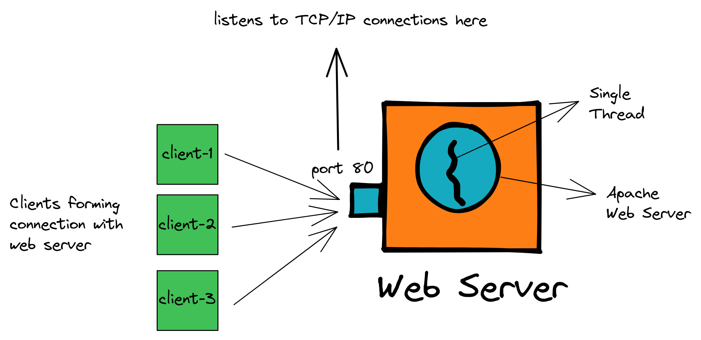

Projects

Multi-thread Web-server
A multi-threaded web server implemented in Python to handle concurrent connections.
Source Code | Demo
Line Scheduler
Production Line Scheduling system to enhance production planning for a steel manufacturer.
Source Code | Demo